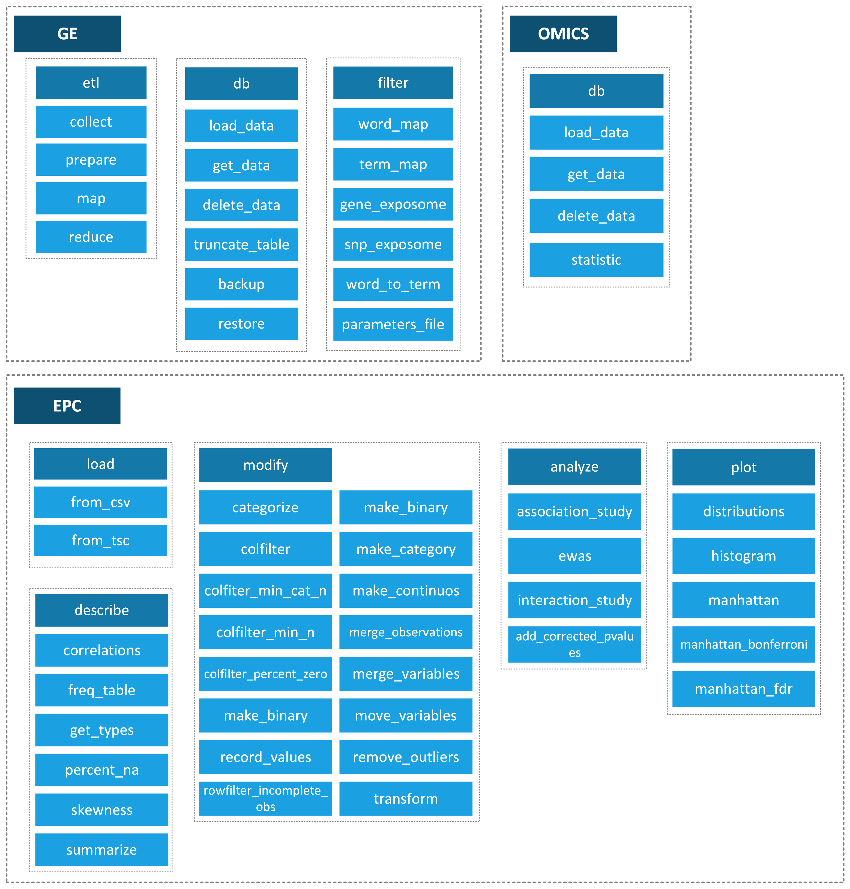
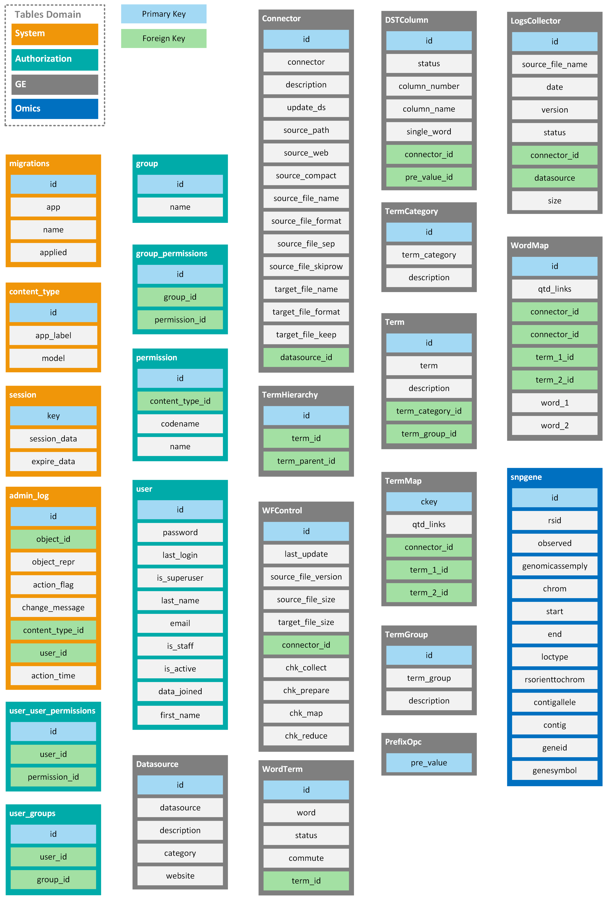

Introduction
The Integrative Genome-Exposome Method (IGEM) is a novel software to study exposure-exposure (ExE) and gene-environment (GxE) interactions in high-dimensional big data sets by integrating an automated knowledge-based user-friendly, open-source, and open-access software.
IGEM is a software to perform high-throughput quality control (QC), knowledge-driven ExE and GxE filtering, machine learning (ML) and regression-based interaction analysis, and big data visualization.
The IGEM system has a modular architecture, initially designed with three applications: GE, OMICS, and EPC, detailed throughout this document.
All applications interact with each other. For example, we can query a GxE relation from GE.db, integrate with other external data, perform regressions and analyze without additional software.
To support the applications, components were implemented that work transparently for the user, and we performed database interface operations, with the file system, among others.
The IGEM can be accessed through a WEB query interface, Python strings, or the command line.
Below is a consolidated view of the IGEM components.
Every IGEM application has processes; we can access them through the available functions and their respective arguments.
Below is an overview of available functions.
IGEM has a database with adapters for SQLite and Postgres and the flexibility of implementation in any database with support for a connector in Python.
The IGEM database has four groups of domains, two for internal functions and the other two for hosting GE and OMICS application data. The EPC application only works with runtime data.
The IGEM can be used in a Client-Server scheme, with the Server being responsible for the maintenance of the Database and the clients with an instance of the IGEM pointed to the Server’s Database.
The knowledge base is customized to meet different needs. It can be used only for extracting, transforming, and reading in the Database or keeping the original data in a Data Lake format for further queries.
Throughout the manual, we will detail all the functionalities of IGEM and applications.